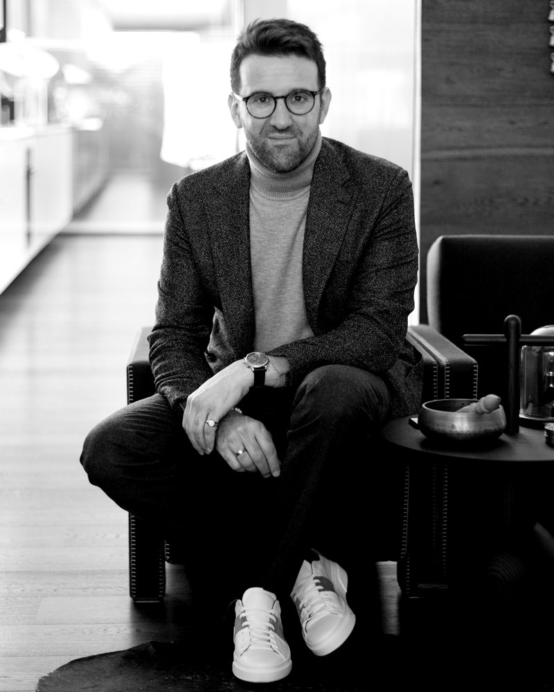

I work between the people who commission creative work and the teams who make it.
Most recently I was Client Services Director at Antimony Studio, an independent brand and digital studio in Melbourne. I joined as Account Director and led relationships with clients across fashion, property, wellness and lifestyle, guiding brand, website, e-commerce, CRM and customer experience work from first brief to launch.
Before agency life, I founded and ran Carl Navè Individually Tailored, a bespoke and made-to-measure menswear business, for twelve years. Running it meant owning the whole commercial picture: product, pricing, suppliers in Italy and China, a team of tailors, and more than 3,000 clients.
That experience shapes how I work with clients now. I understand the pressure behind a marketing budget, and I am at my best helping senior stakeholders and creative teams agree on what matters, then delivering it well.
I was also President of City Precinct, an association representing around 150 Melbourne CBD businesses, and hold a Graduate Certificate in Customer Experience Strategy and Design from RMIT.